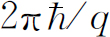

图21-2 在电流增加的螺线管外面的电场
这一讲只是供消遣的。我想用稍微不同的方式来讲这章——看看怎样解决问题。不要以为我在尽最后一分钟的努力教你们一些新东西，在这种意义上说，这章内容并不是整个课程的一部分。相反，我设想我在对程度较高的听众，对那些已经受过量子力学训练的人，就这个题目举行一次讨论会或作一次研究报告。讨论会和正规讲课之间的主要区别在于，讨论会的报告人不必给出所有的步骤，或者所有的数学运算。他只说：“如果你这样那样去做，这就是所得的结果”，而不给出所有的详细证明。所以在这一章里，我将始终叙述概念，并且只给你计算的结果 。你应该认识到并不期望你立刻理解每一件事，但相信（或多或少）如果你完成了这些步骤，就会算出这些结果。
撇开这些不谈，以下是一个我想要讲 的课题，这是最近的、现代的，并且完全是一个正统的研究讨论班上的报告。我的题目是经典背景中的薛定谔方程——超导情形。
通常，出现在薛定谔方程中的波函数只适用于一个或两个粒子。而且波函数本身并不是具有经典意义的某种东西——不同于电场，或矢势或这种类型的东西。单个粒子的波函数是 一种“场”——从它作为位置的函数意义上来说——但一般说来它并不具有经典的意义。然而，在有些情况下，一个量子力学的波函数的确 具有经典意义，这就是我想要讲的。物质在小尺度范围内所特有的量子力学行为，在大尺度范围通常感觉不到，除非在标准的方式中它得出牛顿定律——所谓经典力学定律。但是在某些情况中，量子力学的独特性能以特殊的方式在大尺度范围内呈现出来。
在低温情况下，当一个系统的能量减至非常非常低时，所牵涉的只是靠近基态的非常非常少的态，而不是大量的态。在这种情况下，基态的量子力学特征可以在宏观尺度上显示出来。这一讲的目的就是要说明量子力学与大尺度效应之间的联系——不是通常那种由量子力学平均而重新得出牛顿力学的讨论，而是一种特殊情况，在这种情况下，量子力学将在大的或“宏观”的尺度上产生它自己的特征效应。
作为开始，我将使你们想起某些薛定谔方程的性质 (1) 。我想用薛定谔方程来描述一个粒子在磁场中的行为，因为超导现象涉及到磁场。外磁场用矢势来描写，而问题在于：在矢势的情况下量子力学的定律是什么？描述矢势情况下的量子力学行为的原理是很简单的。有场存在时，粒子沿一定的路线从一处到另一处的振幅等于无场时沿同一路线的振幅乘以矢势的线积分乘上电荷除以普朗克 常数 (2) 后的指数（见图21-1）：
它是量子力学的一个基本陈述。
图21-1 沿路径Γ 由a 至b 的振幅与 成正比
在没有矢势时，带电粒子的薛定谔方程（非相对论性，无自旋）为
式中φ 是电势，从而qφ 是势能 (3) 。式（21.1）相当于下列陈述：在磁场中，哈密顿中的梯度在每一种情况下都用此梯度减去qA 来代替，所以式（21.2）变为
这就是带有电荷q 的粒子在电磁场 A 和φ 中运动的薛定谔方程（非相对论性，无自旋）。
为了证明这是正确的，我想举一个简单的例子：我们有一列沿x 轴不连续排列的原子，其间隔为b ，当无外场存在时，电子从一个原子跳到另一个原子的振幅为K (4) 。按照式（21.1），如果在x 方向有矢势A x （x ，t ），则电子跳跃的振幅将从原来的振幅改变一个因子 ，其中的指数是 乘矢势从一个原子到下一个原子的积分。为简便起见，我们令 ，因为A x 通常取决于x 。如果将位于x 的原子“n ”处找到电子的振幅称为C （x ）≡C n ，那么振幅的变化率由下列方程给出
上式右边有3个部分。首先，如果电子位于x 处，则有某个能量E 0 。像通常那样，它给出E 0 C （x ）这项。其次，存在－KC （x ＋b ）这项，它是电子从位于x ＋b 处的原子“n ＋1”向后跳一步的振幅。但是这发生在矢势中，该振幅的相位必定按照式（21.1）的规则移动。如果A x 在一个原子间隔范围内没有明显改变，那么积分可写为中间点的A x 值乘上间隔b 。所以 乘积分正好是b f （x ＋b /2）。因为电子是往回跳的，所以我已证明这种相位移动带一负号。这就给出了第二部分。同样地，存在从另一边跳过来的一定的振幅，但这时我们需用在x 另一边距离b /2处的矢势，乘上距离b 。这就是第三部分。总和即是在矢势中x 处振幅的方程式。
现在我们知道，如果函数C （x ）足够平滑（我们取长波长极限）并且如果我们让原子靠得更近些，则式（21.4）将接近于电子在自由空间中的行为。所以下一步是假定b 很小，将式（21.4）的右边以b 的幂次展开。例如，若b 为零，则右边正好是（E 0 －2K ）C （x ），所以在零级近似下，能量为E 0 －2K 。接下来是含b 的项。但是因为两个指数函数具有相反的符号，所以只剩下b 的偶次幂。因此你如果把C （x ），f （x ）和指数函数作泰勒展开，然后收集b 2 的项，则得
（“撇号”表示对x 的微商。）
这个令人讨厌的组合看起来非常复杂，但是在数学上它与下式严格相同，
第二个括号作用在C （x ）上得C ′（x ）减去if （x ）C （x ）。第一个括号作用在这两项上得C ″项和含有f （x ）的一次微商及C （x ）一次微商的项。现在记住，零磁场 (5) 的解代表一个具有有效质量m 有效 的粒子，m 有效 由下式给出
如果令E 0 ＝－2K ，并且代回 ，你可以容易地验证式（21.6）与式（21.3）的第一部分相同。（势能项的来源是众所周知的，所以我不再把它包括在这个讨论中。）式（21.1）关于矢势以指数因子的方式改变全部振幅的陈述是与动量算符 用
来代替的规则相同的，正如你在薛定谔方程式（21.3）中所看到的。
现在我转向第二点。单粒子薛定谔方程的一个重要部分是：在某处找到粒子的概率由波函数绝对值的平方给出这一概念。从局域的意义上说概率守恒也是量子力学的特征。当在某处找到电子的概率减少，与此同时在另一处电子的概率增加（保持总概率不变），其中必有某种事情发生。换言之，如果概率在一个地方减少，而在另一处增加，则在其间必有某种流动，从这个意义上说电子具有一种连续性。例如，如果你在其间加一道墙，它就会有影响，概率就不同了。所以仅仅概率守恒并不是守恒定律的完整陈述，正如仅仅说能量守恒并不像局域 的能量守恒 (6) 那样深刻和重要。如果能量消失了，必定有相应的能量流动。同样，我们希望找出一种概率“流”，如果概率密度（单位体积内的概率）有任何改变，就可认为是由于某种流的流入或流出引起的。这种流应该是一个矢量，可以这样来理解这一矢量：其x 分量是粒子在x 方向每秒通过平行于y -z 平面的单位面积的净概率。沿＋x 方向通行的认为是正流，向相反方向通行的认为是负流。
是否存在这种流呢？你们知道概率密度P （ r ，t ）可用波函数表示为
我现在问：是否存在这样的流 J
如果我对式（21.7）求时间的微商，就得到两项
现在对 利用薛定谔方程——式（21.3），并取它的复共轭以得出 ——每一个i 都变号。你就得到
势的各项和其他许多东西都可以消掉，而剩下的正好能写成一个完整的散度项。整个方程式就相当于
这实际上并不像它看起来那样复杂。它是一个对称组合：ψ * 乘以对ψ 的某种运算，加上ψ 乘以对ψ * 的复共轭运算。它是某个量加上它自己的共轭复数，所以其和为实数——它本应如此。这种运算可以这样去记忆：它正好是动量算符 减qA 。我可以把式（21.8）中的流写为
于是就有一个使式（21.8）得以完成的流 J 了。
式（21.11）表明概率是局域守恒的。如果一粒子在一区域消失，而且没有某种东西在中间流动，则它就不可能在另一个区域出现。设想最初的区域被一足够远的封闭面所包围，远到在该面上找到电子的概率为零。在此面内找到该电子的总概率为P 的体积分。但是根据高斯定理，散度 J 的体积分就等于 J 的面积分。如果ψ 在表面处为零，式（21.12）表明 J 亦为零，所以在曲面内找到粒子的总概率不可能改变。只当有些概率向边界靠近时，才会有一些漏出。我们可以说它只能通过表面而漏出——这就是局域守恒。
关于流的方程是相当有趣的，而且有时也带来不少困扰。你会把流想象为粒子的密度乘上速度那种东西。密度应是ψψ * 这种东西，这没有问题。式（21.12）中的每一项看上去像是算符
的平均值的典型形式，所以多半我们会把它想象为流动的速度。看来似乎我们对速度与动量的关系有两种意见，因为我们也认为动量除以质量 应为速度。这两种速度相差一矢势。
碰巧在经典物理中也发现了这两种可能性，动量可以用两种方式来定义 (7) 。一种称为“运动学动量”，但为了完全清楚起见，我在这章里称它为“m v 动量”，这是由质量乘速度而得到的动量。另一个（动量）是更数学化、更抽象的动量，有时称为“动力学动量”，而我将称它为“p 动量”。这两种可能性是
这表明在量子力学里，在存在磁场的情况下，与梯度算符 相关的是p 动量，所以得到式（21.13）是速度算符的结论。
我想暂时离开本题，告诉你们所有这些是什么意思，为什么在量子力学里必须有某些像式（21.15）这样的方程式。波函数按照式（21.3）的薛定谔方程随时间而变化。如果我突然改变矢势，波函数在最初的一刻并不改变，只有它的变化率改变。现在考虑一下在下列情况下将发生什么。假定我有一长螺线管，在其中可以产生一磁场（ B 场）的通量，如图21-2所示。同时有一带电粒子待在附近。假定该通量几乎在一瞬间由零增至某个值。我从零矢势开始，然后加进一矢势。这意味着我突然产生了一个周界矢势 A 。你还记得 A 绕一回路的线积分与穿过这一回路的 B 的通量相同 (8) 。现在如果我突然加进矢势将发生什么情况呢？根据量子力学方程， A 的突然变化并不引起ψ 的突变，波函数仍是相同的。所以梯度也不变。
图21-2 在电流增加的螺线管外面的电场
但是记住，当我突然加进磁通量时，在电学方面发生的情况。在通量上升的短时间内，就有一个电场产生，电场的线积分等于磁通量的时间变化率：
如果通量迅速变化，则此电场是极大的，同时它给该粒子一作用力，该力为电荷乘电场。所以在通量增加的过程中，粒子获得一等于－qA 的总冲量（就是m v 的变化）。换言之，如果你在电荷处突然加一矢势，则该电荷立即获得一等于－qA 的动量。但是有些东西并不立即改变，它就是m v 和－qA 之差。所以当你突然改变矢势时，二者之和 p ＝m v ＋qA 不改变。此量 p 就是我所说的 p 动量，在经典力学的动力学理论中它是一个重要的量，但它在量子力学中也有直接的意义。它取决于波函数的特性，并且认为它与算符
是相同的。
当薛定谔最初发现他的方程时，他发现式（21.8）的守恒定律是他的方程的结果。但是他错误地设想P 是电子的电荷密度，而 J 是电流密度，所以他认为电子是通过这些电荷和电流与电磁场相互作用的。当他对氢原子解出了他的方程并且算得ψ 时，他并没有计算任何事件的概率——那时还没有振幅——于是解释就完全不同了。原子核是稳定的，但是有电流在其周围流动，电荷P 和电流 J 将产生电磁场并将辐射光。他在解一些问题时立即发现结果不太正确。正是在这一点上玻恩对我们有关量子力学的观念作出了重要的贡献。玻恩根据概率幅的概念正确地（就我们所知）解释了薛定谔方程中的ψ ，概率幅是一个非常难懂的概念，振幅的平方不是电荷的密度，而只是在某处单位体积内找到电子的概率，而且当你在某处找到电子时，电子的全部电荷就在该处。这整个思想都属于玻恩的。
于是原子里面的电子波函数ψ （ r ）并不描述弥散的、具有平滑的电荷密度的电子。电子不是在这里，就是在那儿，或者别的什么地方，但是它无论在什么地方都是一个点电荷。另一方面，我们可以设想一种情况，在这种情况下大量粒子处于完全相同的状态，其中非常多的粒子都具有完全相同的波函数。然后怎样呢？它们中的一个粒子在这里，另一个在那里，在一给定地点找到其中任何一个粒子的概率正比于ψ ψ * 。但是由于存在如此多的粒子，所以如果我只看任何一个体积dx dy dz ，那么我通常将找到一个接近ψ ψ * dx dy dz 的数。所以在大量粒子都处于相同的状态，而ψ 是其中每一个粒子的波函数的情况下，ψ ψ * 可以 解释为粒子的密度。在这种情况下，如果每个粒子带有相同的电荷q ，那么，事实上我们可以进一步把ψ ψ * 解释为电荷 密度。正规地说，ψ ψ * 只给出概率密度的量纲，因此ψ 应乘q 才给出电荷密度的量纲。就我们现在的目的而言，我们可以把这个常数因子放到ψ 中去，而把ψ ψ * 本身当作电荷密度。根据这种理解， J （我们曾计算过的概率流）就直接变为电流密度了。
所以在许多粒子都处于完全相同状态的情况下，波函数就可能有一种新的物理解释。电荷密度和电流密度可直接从波函数计算出来，且可把波函数的物理意义推广到经典的宏观情况。
对于中性粒子也有类似的情形。当我们有了单个光子的波函数时，该波函数就是在某处找到光子的振幅。虽然我们一直没有写下光子波函数的式子，但是光子波函数也有一个与电子薛定谔方程相似的方程。光子的方程正好与电磁场的麦克斯韦方程组相同，并且它的波函数与矢势 A 相同。光子的波函数就是矢势。因为光子是没有相互作用的玻色子，许多光子可以处于相同的状态——正如你所知道的，它们喜欢 处于同一状态，因此量子物理与经典物理是一回事。当有无数光子处于相同状态（也就是处在同一电磁波中）时，你就可以直接测量波函数，即矢势。当然，在历史上沿另一个方向进行。最初的观察是对处于相同状态的许多光子的情况进行的，所以我们可以通过在宏观水准上直接动手观察波函数的性质来发现单个光子的正确方程。
对于电子，问题是你不能在相同状态中放进多于一个的电子。因此，人们长期相信，薛定谔方程的波函数决不会有一个类似于光子振幅的宏观表示。另一方面，现在认识到超导现象正是给我们显示出这种情况。
正如你所知，许多金属在低于某一温度（对于不同的金属此温度也不相同）时就变为超导体 (9) 。当把温度降得足够低时，金属导电就没有电阻。这种现象已经在许多种（但不是全部）金属中观察到，而这种现象的理论引起了很多困难。为了了解超导体内部发生的情况曾花费了很长的时间，而就我们目前的目的而言我们只作适当的描述。原来这是由于电子与晶格中原子的振动间的相互作用，使得电子之间有一个微小的净有效吸引 ，结果使电子合在一起，如果非常定性和粗糙地讲，就是电子形成束缚对。
现在你知道，单个电子是费米粒子。但是一束缚对表现得像玻色子。因为，如果我交换一个对中的两个电子，我就两次改变了波函数的符号，这意味着我没有改变任何东西。因此一个对是 一个玻色子。
成对的能量——即净的吸引力——是非常非常弱的，只要有很小的温度升高，热骚动就能使这两个电子分开变回到“正常”电子。但是当你把温度降到足够低，以至它们尽可能进入绝对最低的能量状态时，它们就聚集成对。
我不希望你把束缚对想象成真像一个点粒子那样很紧密地结合在一起。事实上，了解这种现象的最大困难之一的根源就在于事情并非如此。形成对的两个电子实际上散布在一个相当大的距离上，对之间的平均距离相对地小于单个对的大小。几个对在同一时间占据着同一空间。关于在金属中电子形成对的原因以及在形成对时放出的能量的估计，这两者都是最近取得的成就。超导理论中的这个基本要点，首先在巴丁、库珀和施里弗的理论中得到了解释 (10) ，但这不是本章的主题。然而，我们将接受电子确实以这种或那种方式形成对的概念，并且我们可以把这些对想象成或多或少地表现得像粒子，因此我们可以谈论关于一个“对”的波函数。
现在，这种对的薛定谔方程多少有点像式（21.3）。有一个区别是现在的电荷q 为电子电荷的两倍。同时，我们不知道在晶格中对的惯性或有效质量，所以我们不知道对m 要代入什么数值。我们也不应该认为如果达到很高频率（或短波长），这也是正确的形式，因为与极其快速变化的波函数相对应的动能可以大到使对解体。在有限的温度下，根据玻尔兹曼理论总有一些束缚对破裂。一个对破裂的概率正比于exp（－E 对 /k T ）。没有被束缚在对中的电子叫做“正常”电子，它们以普通的方式在晶体内运动。然而，我将只考虑基本上是零度的情况——或者，无论如何，我将不顾那些由不在对中的电子所造成的复杂情况。
因为电子对是玻色子，当一给定的状态中存在着很多电子对时，其他的对具有特别大的振幅进入同一状态。所以几乎所有的对都被锁定在最低能量的完全相同的状态 ——很不容易使其中一个对进入另一个状态。进入相同状态的振幅比进入未被占据的状态的振幅要大一个著名因子 ，这里n －1是最低态的占有数。所以我们认为所有的对都在同一个状态中运动。
那么我们的理论将会像什么呢？我将把ψ 称为处于最低能量状态的对的波函数。但是，因为ψ ψ * 将要与电荷密度ρ 成正比，我不妨把ψ 写成电荷密度的平方根乘上某个相因子：

式中ρ 和θ 都是 r 的实函数。（当然，任何复数函数也可以写成这样。）当我们谈到电荷密度时，我们的意思指什么是很清楚的，但是，波函数的相位θ 的物理意义是什么呢？那么，让我们来看一看把ψ （ r ）代入方程式（21.12）时发生些什么，并且用这些新变量ρ 和θ 来表示电流密度。它仅是变量的变换，我不想写出全部运算步骤，其结果为
因为电流密度和电荷密度对超导电子气具有直接的物理意义，所以ρ 和θ 两者都是实在的东西。相位就像ρ 一样是可观察量，它是电流密度 J 的一部分。绝对 的相位不是可观察量，但是如果各处的相位梯度知道的话，相位就知道了，除了差一个常数。你可以在一点上定义相位，并且各处的相位也就确定了。
顺便提一句，当你把电流密度 J 想象为实际上是电荷密度乘上电子流的运动速度即ρ v 时，就能够把电流方程分析得更精细一些。于是式（21.18）就相当于
注意m v 动量有两部分，一部分是来自矢势的贡献，另一部分是来自波函数行为的贡献。换句话说，量 正好就是我们说过的p 动量。
现在我们可以来叙述某些超导现象了。首先是没有电阻，之所以没有电阻是因为所有的电子都聚集在同一状态。在正常的电流中你可把一个电子或别的电子从有规则的电流中打出来，逐渐使整体的动量退化。但是在这里要使一个电子偏离所有其他电子的行为是非常困难的，因为所有玻色子都有进入同一状态的趋势。电流一旦产生了，就永远保持下去。
如果你有一块处于超导态的金属，并且加上一不太强（我们将不去详细地讨论到底有多强）的磁场，则此磁场不能穿过该金属，这现象也是容易理解的。如果你建立起磁场，其中有一部分磁场建立在金属内部，则会有一个产生电场的磁通量的变化率，而根据楞次定律，该电场会立即产生一反抗该通量的电流。既然所有的电子将一起运动，所以一个无限小的电场将产生足够的电流，以完全抵消任何外加的磁场。所以你如果将一金属冷却至超导态后加上磁场，则该磁场将被排除。
一个由迈斯纳通过实验发现的有关现象更为有趣 (11) 。如果你有一块处于高温的金属（所以它是正常导体），并且建立一穿过该金属的磁场，然后你把温度降到临界温度（这时金属变为超导体）以下，磁场就被排除出去 。换言之，金属中突然出现它自己的电流——其大小正好把磁场推出去。
我们可以在方程中看到关于产生这种现象的原因，我愿意来解释一下。假定我们取一整块超导材料，在任何稳定情况下，电流的散度必然为零，因为电流无处可流。为方便起见我们选取使 A 的散度等于零。（我应该解释一下为什么选择这样的约定不会失去普遍性，但是我不想花这个时间。）取式（21.18）的散度，则拉普拉斯算符作用于θ 等于零。等一等，请问ρ 的变化怎样呢？我忘记提及一个要点，由于在金属中存在原子离子的晶格，所以它具有一个正电荷背景。如果电荷密度ρ 是均匀的，就没有净电荷和电场。如果在一区域内有电子的积聚，电荷就不会中和，在那里就有一巨大的排斥力使电子分离 (12) 。所以在正常情况下，超导体内电子的电荷密度几乎是完全均匀的——我可以取ρ 为常数。唯一可使 在金属块内每一处皆为零的办法是θ 为一常数。这就意味着p 动量对 J 没有贡献。于是式（21.18）表明电流与ρ 乘 A 成正比。所以在一块超导物质内的每个地方，电流必定与矢势成正比：
因为ρ 和q 有相同的（负）符号，而ρ 又为常数，所以我可以设ρq /m ＝－（某个正常数），于是
这个方程最初是由H．伦敦和F．伦敦 (13) 提出来解释超导电性的实验观察结果的，这是在了解此效应的量子力学起因之前很久的事。
现在我们可以把式（21.20）用到电磁的方程中去以求关于场的解。矢势与电流密度的关系为
如果我对 J 采用式（21.21），则得
式中λ 2 就是一个新常数，
现在我们试着解此方程求 A ，并且看看出现些什么细节。例如，在一维情况下式（21.23）具有形式为e－λ x 和e＋λ x 的指数解。这些解表示当由表面深入到材料内部时，矢势必然指数式减少 。（它不能增加，否则将是一个爆炸。）如果金属块比1/λ 大很多，那么磁场只透入表面一薄层——厚度约为1/λ 。整个内部的其余部分皆无磁场。如图21-3所示。这就是迈斯纳效应的解释。
图21-3 （a）磁场中的超导圆柱体；（b）磁场B 作为r 的函数
距离λ 有多大？记住r 0 是电子的“电磁半径”（2.8×10－13 cm），它由下式给出
还得记住，式（21.24）中的q 是电子电荷的两倍，所以
把ρ 写成q e N ，这里N 是每立方厘米中电子的数目，我们有
对于像铅这样的金属，每立方厘米有3×1022 个原子，所以如果每个原子只贡献出一个传导电子，1/λ 大致为2×10－6 cm，它给出了这个量的数量级。
伦敦方程（21.21）的提出是为了说明所观察到的包括迈斯纳效应在内的超导电性实验事实。然而近来有了更富有戏剧性的预言。伦敦提出的预言太奇特了，以至到最近才受到人们较多的注意。我现在来讨论它。假定这次我们不用一整块材料，而用一厚度大于1/λ 的环 ，如果开始我们加一穿过此环的磁场，然后使环冷却到超导状态，接着再移去原来的 B 源，我们来看看在这种情况下会发生些什么。事件发生的先后次序画在图21-4上。在正常态时环的体内将有场，如图21-4（a）所示。当环成为超导态时磁场被迫排除在材料 之外（正如我们刚才看到的）。还有一些通量穿过环中的孔，如图（b）所示。如果现在移去外磁场，穿过孔的磁力线将被“陷俘”，如图（c）所示。穿过中心的通量Φ 不能减少，因为 必须等于 E 绕环的线积分，而在超导体内这是零。当外磁场移去后，超导电流开始绕环流动以保持穿过环的通量为一常数。（这是旧的涡流概念，只是电阻为零。）然而，这些电流都靠近表面流动（至1/λ 的深度），同样可以用我们对实心金属块的分析方法来证明。这些电流能够使磁场保持在环体之外，并且产生一个永久的陷俘磁场。
图21-4 在磁场中的环：（a）处于正常态；（b）处于超导态；（c）外磁场移去后
然而，现在有一个基本的区别，而且我们的方程预言了一个惊人的效应。上面我们所作出的在实心块中θ 必为一常数的论证，对环不适用 ，你可以从下面的论证看到。
我们知道在环体内部电流密度 J 为零，所以由方程式（21.18）得
如果我们取 A 绕曲线Γ 的线积分，该曲线在环的横截面中心附近绕环一周，所以它绝不会靠近表面，如图21-5所示，我们来考虑在这种情况下得到些什么。由式（21.26），
现在你已知道， A 绕任何回路的线积分都等于穿过该回路的 B 通量

式（21.27）变为
一函数梯度从一点到另一点（譬如从点1到点2）的线积分等于该函数在这两点的值之差。即
如果我们设此两端点1和2重合在一起，使积分曲线构成一闭合回路，起初你会认为θ 2 将等于θ 1 ，从而式（21.28）中的积分将为零。对于一简单连接的超导体中的闭合回路，这是对的，但是对于一环状超导体它就未必正确。我们能够作出的唯一物理上的要求是：每一点波函数只可能有一个值 。不论θ 绕环如何变化，当回到出发点时，你必须得到波函数的相同值
若θ 改变2π n （n 是任意整数），就出现这一情况。所以如果我们绕环一整圈，式（21.27）的左边必为 。利用式（21.28），得
陷俘磁通量必定总是 的整数倍！ 如果你把环看作为一个具有理想的完全（即无限大）导电性的经典物体，那么你会认为最初发现的穿过该物体的通量将始终保留在那儿——任何数值的通量能够完全被陷俘。但是超导的量子力学理论告诉我们通量只能是 等等，而无介于它们之间的值。它必然是一基本的量子力学单位的倍数。
图21-5 超导环内的曲线Γ
伦敦 (14) 预言被一超导环陷俘的通量是量子化的，并指出此通量的可能值由式（21.29）给出，其中q 等于电子电荷。按照伦敦的预言通量的基本单位应是 ，约为4×10－7 高斯•厘米2 。为使这种通量形象化，想象一直径为0.1mm的小圆柱，当它含有这样多的通量时，内部磁场大约是地球磁场的百分之一。用一灵敏的磁测量装置应能观察到这一通量。
1961年迪弗和费尔班克 (15) 在斯坦福大学寻找并发现了这一量子化的通量，差不多与此同时多尔和奈鲍尔 (16) 在德国也发现了这一量子化的通量。
在迪弗和费尔班克的实验中，超导体的细小圆柱是由1cm长的56号（1.3×10－3 cm直径）铜线电镀一薄层锡制成的。锡在3.8K以下成为超导体，而铜仍为正常金属。将该导线放在一可控的小磁场中，并将温度降低到锡变成超导为止，然后将磁场外源移去。你会预期由于楞次定律这将产生一电流，结果导线内部的通量保持不变。这时小圆柱应有一与内部通量成正比的磁矩。此磁矩可以通过导线在小圆柱两端的一对小线圈里面上下轻轻跳动（就像缝纫机的针一样，但其频率为100Hz）而测得。线圈内的感应电压即为此磁矩的量度。
当迪弗和费尔班克做这个实验时，他们发现通量是量子化的，但是其基本单位只有伦敦所预言的一半大 。多尔和奈鲍尔得到相同的结果。起初这是十分难理解的 (17) ，但是现在我们已了解为什么会那样了。根据巴丁、库珀和施里弗的超导理论，出现在式（21.29）中的q 是一电子对 的电荷，所以它等于 。基本的通量单位是
或是伦敦所预言的数值的一半。现在一切都吻合了，并且测量表明在大尺度范围内所预言的纯量子力学效应是存在的。
迈斯纳效应和通量量子化是关于我们一般概念的两个证据。只是为了完整起见我希望说明一下，从这个观点出发完整的超导流体方程将是怎样的——这颇为有趣。到现在为止我只把ψ 的表示式代入电荷密度和电流密度的方程式。如果把它代入完整的薛定谔方程，就得出关于ρ 和θ 的方程。因为我们这里有一个具有电荷密度ρ 和不可思议的θ 的电子对的“流体”，所以看看能导出什么方程是很有趣的——我们可以试试，看一下对这种“流体”能得到什么类型的方程！所以我们将式（21.17）的波函数代入薛定谔方程（21.3），并记住ρ 和θ 是x ，y 和z 的实函数。如果我们把方程的实部和虚部分开，于是就得到两个方程。为了把它们写成比较简洁的形式，可根据式（21.19）写成
于是我得到的方程之一是
因为ρ v 是最初的 J ，所以这刚好又是连续性方程。我所得到的另一个方程告诉我们θ 如何变化，它是
如果我们认为 是“速度势”——除了应该是流体压缩能的最后一项具有对密度ρ 的相当特殊的依赖关系外，对流体力学非常熟悉的人（我相信你们中这种人不多）将会认出：这是一个带电流体的运动方程。无论如何，该方程表明：量 的变化率由动能项m v 2 /2，加上一势能项－qφ ，和另一附加项给出，该附加项包含因子 ，我们可称之为“量子力学能”。我们已经知道，在超导体内部静电力的作用将ρ 保持得非常均匀，所以倘若我们只有一个超导区域，那么在所有的具体应用中，我们无疑可以忽略这一附加项。如果两个超导体之间存在一个边界（或者ρ 值可以急剧变化的其他情况），则这项就变得很重要。
对于不很熟悉流体力学方程的人，我可以利用式（21.31）用 v 表示θ ，从而将式（21.33）重新写成物理意义更为明确的形式。对整个方程式（21.33）取梯度，并利用式（21.31）以 A 和 v 来表示 ，我得到
这方程的意义是什么呢？首先，记住
其次，注意如果我取式（21.19）的旋度，我得到
因为梯度的旋度恒为零。但 是磁场 B ，所以式（21.34）的前两项可以写为
最后，你应了解 代表流体在一点的速度的变化率。如果你注意一个特定的粒子，它的加速度是 v 的全 微商（或者在流体动力学中有时称为“共动加速度”，它与 的关系 (18) 为
这一额外的项也出现在方程式（21.34）右边的第三项中，把它移到左边，我可以将式（21.34）写成下列形式：
由式（21.36）我们有
这两个方程是超导电子流体的运动方程。第一个方程只不过是带电流体在电磁场中的牛顿定律。它说明流体中的每一个电荷为q 的粒子的加速度来自于普通的洛伦兹力 再加上一个附加力，该附加力是某个神秘的量子力学势的梯度——除了在两个超导体之间的连接处外，该力不很大。第二个方程说明流体是“理想的”—— v 的旋度有零散度（ B 的散度恒为零）。这意味着速度可以用速度势来表示。通常对理想流体我们写为 ，但是对于在磁场中的理想带电流体 来说，应修改成式（21.39）。
所以，超导体内电子对的薛定谔方程给了我们一个带电理想流体的运动方程。超导电性与带电液体的流体动力学问题相同。如果你想解任何有关超导体的问题，你就应用这些对流体的方程［或用与其等价的一对方程式（21.32）和式（21.33）］，并将它们与麦克斯韦方程相结合，以求得场。（你用来计算场的电荷和电流当然必须包括从超导体和从外源来的那些电荷和电流。）
顺便说一说，我认为式（21.38）并不十分正确，还应该有一个涉及密度的附加项。这新的项并不取决于量子力学，而是来自与密度变化有关的普通能量。正如在普通流体中那样，应该有一个ρ 和ρ 0 的偏差的平方成正比的势能密度，这里ρ 0 为未受扰动时的密度（它在这里也等于晶格的电荷密度）。因为存在与这个能量的梯度成正比的力，所以在式（21.38）中会有另外一项，其形式为：（常数） 。这一项不能从分析中得到，因为它来自粒子之间的相互作用，而在应用独立粒子近似中我把它忽略了。然而，它正是我在定性分析中所提到过的力，那时我指出静电力趋向于使ρ 在超导体内近乎保持一个常数。
我接下来想讨论一个很有趣的情况，它是约瑟夫森在分析两个超导体间的联结处可能发生些什么时注意到的 (19) 。假定我们有两个以一薄层绝缘材料相联结的超导体，如图21-6所示。这种装置现在称为“约瑟夫森结”。如果绝缘层很厚，则电子不能穿过它，但是，如果绝缘层足够薄，则电子有相当的横跃过此薄层量子力学振幅。这不过是量子力学势垒穿透的另一个例子。约瑟夫森分析了这种情况，并且发现应该出现许多奇异的现象。
图21-6 薄绝缘层隔开的两个超导体
为了分析这种结，我将把在一边找到电子的振幅叫作ψ 1 ，而在另一边找到它的振幅叫ψ 2 。在超导态，波函数ψ 1 是所有的电子在一边的共同的波函数，而ψ 2 是在另一边的相应波函数。我可以对不同种类的超导体来解这个问题，但是让我们取一个非常简单的情况，即两边为相同的材料，从而结既对称又简单。再有，我们暂时假设不存在磁场。于是这两个振幅应该有如下的关系：
常数K 是结的一个特征常数。如果K 为零，这两个方程只描述各个超导体具有能量为U 的最低能量状态。但是通过振幅K ，两边有耦合，可从一边渗透到另一边。（它就是双态系统的“翻转”振幅。）如果两边相同，则U 1 应等于U 2 ，我就可以把它们消去。但是现在假定我们把两个超导区域联至电池两端，使得结两边有一电势差V 。于是
为了方便起见，我们可定义结的中央为能量的零点，则此两方程为
这是两个量子力学态耦合在一起的标准方程。这次让我们用另一种方法来分析这些方程。我们作下述代换
式中θ 1 和θ 2 是结两边的相位，而ρ 1 和ρ 2 是该结两边的电子密度。记住在实际应用中，ρ 1 和ρ 2 几乎完全相同且等于ρ 0 ，ρ 0 为超导材料中电子的正常密度。现在如果你把这个关于ψ 1 和ψ 2 的方程代入式（21.40），并且令每一种情况的实数和虚数部分分别相等，你就得到4个方程。为简单起见，设（θ 2 －θ 1 ）＝δ ，则结果为
前面两个方程说明
。“但是”，你说，“如果ρ
1
和ρ
2
皆为常数且等于ρ
0
，则 和
必定都为零”。这种说法不完全对。这些方程并不是全部的情况。它们只说明如果不存在因电子流体与正离子背景之间的不平衡而造成的额外电力
，
和
应该是什么。它们告诉我们密度怎样开始
变化，因而描述即将开始流动的电流种类。这个从边1到边2的电流就是
（或
），或
和
必定都为零”。这种说法不完全对。这些方程并不是全部的情况。它们只说明如果不存在因电子流体与正离子背景之间的不平衡而造成的额外电力
，
和
应该是什么。它们告诉我们密度怎样开始
变化，因而描述即将开始流动的电流种类。这个从边1到边2的电流就是
（或
），或
该电流将立即对区域2充电。不过 我们已经忘记了这两边是由导线联结在电池上的了，因为电流将流动以保持电势恒定，所以流动的电流并不对区域2充电（或对区域1放电）。这些来自电池的电流不包括在我们的方程中。当它们被包括进去时，ρ 1 和ρ 2 事实上并不改变，但穿过结的电流仍由式（21.44）给出。
既然ρ 1 及ρ 2 确实保持恒定且等于ρ 0 ，我们令 ，并写成
于是和K 一样，J 0 是表示这一特定结的特征数。
另一对方程式（21.43）告诉我们关于θ 1 和θ 2 的情况。我们感兴趣的是用于式（21.45）的差δ ＝θ 2 －θ 1 ，我们所得到的是
这意味着我们可以写出
式中δ 0 是t ＝0时的δ 值。再记住q 是电子对的电荷，即q ＝2q e。在式（21.45）和式（21.47）中，我们得到一个重要结果，就是约瑟夫森结的一般理论。
现在来看看结果如何。首先，加一直流电压。如果你加上直流电压V
0
，则正弦的自变量就变为
。因 是一个小的数量（与通常的电压和时间相比），所以此正弦振荡相当迅速，并且没有什么净电流。（实际上，因为温度不为零，所以你会得到一个因“正常”电子的传导而形成的小电流。）另一方面，如果结上的电压为零
，你反而能够得到电流！无电压时的电流可以是＋J
0
和－J
0
之间的任何值（取决于δ
0
的值）。但是若在结上试加一电压，电流反而趋于零。这种奇特的行为最近已在实验中观察到
(20)
。
是一个小的数量（与通常的电压和时间相比），所以此正弦振荡相当迅速，并且没有什么净电流。（实际上，因为温度不为零，所以你会得到一个因“正常”电子的传导而形成的小电流。）另一方面，如果结上的电压为零
，你反而能够得到电流！无电压时的电流可以是＋J
0
和－J
0
之间的任何值（取决于δ
0
的值）。但是若在结上试加一电压，电流反而趋于零。这种奇特的行为最近已在实验中观察到
(20)
。
还有另一种获得电流的方法——在直流电压上再加一个频率很高的电压。令
式中 。于是δ （t ）为
对于Δx 很小的情形，
对sinδ 应用这一近似，得

第一项平均为零，但是如果
则第二项不为零。如果交流电压正好为此频率，则应有电流。夏皮罗 (21) 宣称已观察到这样一种共振效应。
如果你查看一下论述这个题目的文章，你将会发现他们常把电流的公式写成
式中积分取为穿过结。写成这样的理由是，当存在穿过结的矢势时，要按照我们以前解释过的方式修改翻转振幅的相位。如果你一直追踪这一额外的相位，则得到上面的结果。
最后，我想描述一个很富有戏剧性而又有趣的实验，它是最近完成的分别来自两个结的电流的干涉实验。在量子力学中我们都很熟悉来自两个不同狭缝的振幅干涉。现在我们来做两个结之间的干涉，它是由电流经过不同路径到达时的相位差异所引起的。在图21-7中，我给出了两个并联的不同结“a ”和“b ”。P 端和Q 端联至电学仪器上，它测量任何流过的电流。外部的电流J 总 是通过两个结的电流之和，设J a 和J b 是流过两个结的电流，并设它们的相位为δ a 和δ b 。无论你走这条或那条路线，P 和Q 之间的波函数的相位差必定相同。沿着通过结“a ”的路线，P 和Q 之间的相位差为δ a 加上矢势沿图中上面路线的线积分：
为什么呢？因为θ 与 A 的关系为式（21.26）。如果你沿某一路线对该方程进行积分，则左边给出相位的改变，正如我们在这里所写的那样，它正好与 A 的线积分成正比，沿图中下面的路线相位变化可以类似地写为
这两个相位差必须相等，如果我把它们相减，则得到δ 的差必然是 A 沿回路的线积分：
这里积分是沿图21-7中穿过两个结的闭合回路Γ 。对 A 的积分就是通过回路的磁通量。所以两个δ 之差为 乘上穿过回路的两支路之间区域的磁通量Φ ：
我可以通过改变回路上的磁场来控制这个相位差，所以我能够调节这个相位差，看看流过结的总电流是否显示这两部分的任何干涉。总电流将是J a 和J b 之和。为了方便起见，我们写成
于是
图21-7 两个并联的约瑟夫森结
现在我们对δ 0 一无所知，而大自然能够根据环境随意调节它。尤其是，它将取决于我们加在结上的外加电压。然而，无论我们做什么，sinδ 0 永远不可能大于1。所以对于任何给定的Φ ，电流的极大 值为
这个极大电流将随Φ 而变化，每当
时，它本身为最大，此处n 为整数。这就是说在磁通匝连数正好具有我们在式（21.30）中得出的量子化数值时，电流有极大值！
最近对穿过两个结的约瑟夫森电流，作为两结之间区域内的磁场的函数进行了测量 (22) 。其结果如图21-8所示。存在一个普遍的背景电流，它们来自各种被我们忽略的效应。但是伴随磁场变化的电流的快速振荡是由式（21.52）中的干涉项 引起的。
图21-8 穿过一对约瑟夫森结的电流记录
显示电流是两个结之间区域的磁场的函数（参见图21-7）。［此记录由福特汽车公司科学实验室的R．C．Jaklevic，J．Lambe，A．H．Silver及J．E．Mercereau提供。］
在没有场的地方矢势是否存在，这是关于量子力学的一个迷人的问题 (23) 。我刚才描述的这个实验，也用置于两个结之间的细小螺线管来做过，此时唯一有效的磁场 B 在螺线管的内部，而在超导导线本身上的磁场微不足道。据报道电流的量值根据该螺线管内部的磁通量而振荡，即使该磁场从不接触导线——这是矢势是“物理实在”的又一个证明 (24) 。
我们不知道接下来将出现什么。但是来看看能做成些什么吧！首先注意，两个结之间的干涉可以用来做成一个灵敏磁强计。如果把一对结所包围的面积做成，譬如说1mm2 ，则在图21-8的曲线上极大值之间的间隔为2×10－6 高斯。分辨出两个峰之间距离的1/10是完全可能的，所以用这种结测量小到2×10－7 高斯的磁场应该是没有问题的——或者可以如此精度来测量较大的磁场。我们甚至能走得更远些。例如，假定我们把一组10个或20个结以相同的间隔放在一起，于是我们就会有10个或20个狭缝之间的干涉，并且当我们改变磁场时，我们将得到非常尖锐的极大值和极小值。我们可以有一个用于测量磁场的20个或者甚至为100个狭缝的干涉仪，而不是两个狭缝的干涉。或许我们可以预言，磁场的测量——用量子力学的干涉效应——将最终变得和光的波长测量一样精密。
这些都是关于现代所发生的事情的一些例证——晶体管、激光以及现在的这些结，它们最终的实际应用仍属未知。1926年所发现的量子力学已经有了近40年的发展历史，而且相当突然地开始在许多实用方面得到利用。我们正在非常精美的水准上取得对自然界的控制。
很遗憾，要参加这项冒险活动，尽快学习量子力学是绝对必要的。我们的希望是在这门课程中找到一种方法，使你们能尽早了解这一部分物理学的奥秘。
————————————————————
(1) 实际上我不是提醒你们，因为以前我并没有给你们说明过这些方程，但是别忘了这个讨论会的精神。
(2) 第2卷，§15-5。
(3) 注意不要与我们以前使用的关于状态的标记φ 相混淆。
(4) K 与无磁场时线型晶格问题中称为 A 的量相同。见第13章。
(5) §13-3。
(6) 第2卷§27-1。
(7) 例如，见J．D．Jackson．Classical Electrodynamics ．John Wiley and Sons，Inc．New York（1962），p.408。（中文版：杰克逊著，朱培豫译。《经典电动力学》，高等教育出版社§6.8，1978年6月第一版。1983年第四次印刷。——译者注）
(8) 第2卷第14章§14-1。
(9) 首先由开米林昂尼斯（Kamerlingh-Onnes）在1911年发现。H．Kamerlingh-Onnes，Comm．Phys．Lab．Univ．Leyden．Nos． 119，120，122（1911）。你可以在E．A．Lyuton所著的Superconductivity ，John Wiley and Sons，Inc.，New York，1962中找到精彩的最新的讨论。
(10) J．Bardeen，L．N．Cooper和J．R．Schrieffer，Phys．Rev． 108 ，1175（1957）。
(11) W．Meissner and R．Ochsenfeld，Naturwiss． 21． 787（1933）。
(12) 事实上，如果电场太强，对将破裂，所产生的“正常”电子将进入任何正电荷存在的区域，以使其中和。还有产生正常电子也需要能量，所以主要的一点是近乎均匀的密度ρ 在能量上是非常有利的。
(13) F．London和H．London，Proc．Roy．Soc． （London）A149． 71（1935）；physics 2 ，341（1935）。
(14) F．London． Superfluids ，John Wiley and Sons，Inc.，New York，1950，Vol．I，p.152．
(15) B．S．Deaver．Jr and W．M．Fairbank，Phys．Rev．Letter 7 ，43（1961）．
(16) R．Doll及M．Nabauer，Phys．Rev．Letters 7 ，51（1961）．
(17) 昂萨格（Onsager）曾提出这是可能发生的（Deaver and Fairbank，Ref 11），虽然别人都不了解为什么。
(18) 见第2卷§40-2。
(19) B．D．Josephson，Physics Letters 1 ，251（1962）．
(20) P．W．Anderson and J．M．Rowell，Phys．Rev．Letters 10 ，230（1963）．
(21) S．Shapiro，Phys．Rev．Letters 11 ，80（1963）．
(22) Jaklevic，Lambe，Silver and Mercereau，Phys．Rev．Letters 12 ，159（1964）．
(23) Jaklevic，Lambe，Silver and Mercereau，Phys．Rev．Letters 12 ，274（1964）．
(24) 见第2卷第15章§15-5。